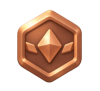

How do you want to use Sort Lab?
Ranked · needs an account
Play for points
Log in to play Ranked quizzes, earn a badge and see the leaderboard.
Practice · no account
Study and practice
Study the chart and try practice quizzes. Nothing is saved to an account.
Account
Log in
Enter the login ID you were shown when you created your account.
Design mock. Both buttons open the logged-in screens with a fictional player. Nothing you type is checked or sent.
Account
Lost your login ID?
A login ID cannot be recovered online.
Ask the owner in person
Talk to the Sort Lab owner at work. After they confirm it is you, they give you a new login ID for the same account. The old one stops working.
Your username or tag alone is not enough to get a new login ID.
Test your skills and study the chart.
The official season has started
Where do you want to start?
You are a guest. Ranked and the leaderboard need an account. Use Log in at the top when you want one.
Mock controls · not part of the app
Practice
Study and practice
Practice never changes Ranked points.
Ranked
Pre-Season
Your balance
Iron · 640 points
No start date has been announced for the official season.
Ranked
Leaderboard
Mock controls · not part of the app
Profile
parcel_fox
Tag #K7Q2MX
Your balance
640 points
Iron · 360 points to the Iron cap (1,000)
Promotion available
You are at the Iron cap. A perfect 15 out of 15 quiz promotes you to Bronze. Start promotion is on the Ranked screen; nothing starts from here.
How badges work
- Challenger4,001 and up, no cap
- Gold3,001–4,000
- Silver2,001–3,000

Bronze1,001–2,000- IronThrough 1,000 · you are here
One balance decides your badge. Reaching a cap makes promotion available; only a perfect promotion quiz moves you up.
Pre-Season is still running
When the first official season starts, every player goes back to 0 points and Iron. Your Pre-Season attempts are kept here, and only you can see them.
Loading your Pre-Season attempts…
You played no Ranked quizzes during Pre-Season, so there is nothing here.
Could not load your history
Your attempts are safe. Try again in a moment.
Only you can see this. Pre-Season results never count toward the official season.
- Ranked quiz—Example date 3Ended at launch · no score applied
- Ranked quiz+275Example date 2 · 14 of 15 correctCompleted
- Ranked quiz−40Example date 1 · 9 of 15 correctCompleted
Mock controls · not part of the app
Owner
Owner tools
These are the only administrator powers this app has. Approving does not change anybody's points, badge or history, and gives you no access to a player's record.
Owner
Case review
Closing a case records what you found. It never changes anybody's points, badge or access, and it opens no ticket by itself. A connection flag is a pattern the server noticed, not evidence that somebody cheated.
Mock controls · not part of the app
Owner
Access recovery
Mock controls · not part of the app
Owner
Prize eligibility
Approved sorters may win one of the three hats. Each sorter holds one approved account. New approvals close when the season ends; you can still withdraw one afterwards.
Approve a sorter
The roster reference is how you identify this person on your own roster. It is never shown to players.
Approved this season
Mock controls · not part of the app
Support
Tickets
Only you can see your tickets. When a ticket is closed, its description and connection details are deleted 15 days later. Evidence shared with another case that is still open is kept until that case closes.
- OpenQuiz cut out halfwayAttempt #EX-204 · example date 7 Your evidence is kept while this case is open.
- Closed · network instabilityLost connection twiceAttempt #EX-187 · example date 5 Description and connection details are deleted on example date 9.
- Closed · not enough evidenceQuestion did not loadAttempt #EX-152 · example date 3 Kept for now: this connection log is shared with another case that is still open.
Opening a ticket never changes your points or your access.
You have no tickets. Support only opens one when you ask for it: nothing here is created automatically, and a connection problem does not open a ticket by itself.
Loading your tickets…
Could not load your tickets
Your tickets and your points are safe. Try again in a moment.
Create ticket
Sent with your ticket
The attempt you picked and the connection events recorded for it. Only you and the people reviewing your ticket can see them. Your tickets never appear on your profile or the leaderboard.
Ticket sent
Someone will look at it. You can close the app; nothing is waiting on you.
This does not change your points or your access, whatever the outcome is.
Quiz cut out halfway
Open
Attempt #EX-204 · example date 7
What you wrote The quiz stopped answering and I could not get back in.
Sent with it The connection events for that attempt.
Your evidence is kept while this case is open. Nothing here changes your points or your access.
Lost connection twice
Closed · network instability
Attempt #EX-187 · example date 5
Outcome Closed as network instability. Your points and your access are unchanged.
The description and the connection details of this ticket are deleted on example date 9. Your season points and quiz history stay.
Mock controls · not part of the app
Question 4 of 15
Ground · New York
148–149
Where does this go?
Design mock. Each belt opens a different outcome so you can see them all: PURPLE shows the locked moment, ORANGE a wrong answer, GREEN a right one, YELLOW a timeout.
Answer sent
Ground · New York
148–149
Your answer is in. You cannot change it or answer again.
Checking with the server…
Correct
+20 points · Medium question
PA 179–189 goes to GREEN on the Twilight Ground chart.
This stays until you press Next. The next question's ten seconds start only then.
Review this route
−10 points · Medium question
PA 179–189 goes to GREEN on the Twilight Ground chart. Check the service and the range before choosing.
Time ran out
−10 points · Medium question. A question that runs out counts as wrong.
The ten seconds belong to the server and start when it sends the question, so a slow connection can spend them before the question appears.
Correct
+30 points · Hard question
That was question 15 of 15, so the attempt is already finished. There is no Next on the last question.
Ranked · attempt finished
13 of 15 correct
Iron stops at 1,000
Points above a cap are not saved for later. Reaching the cap is what makes promotion available.
Ranked · attempt finished
11 of 15 correct
Iron · 515 points to the Iron cap (1,000). Nothing was discarded.
Ranked · attempt finished
4 of 15 correct
Still Iron. A hard question costs 5 when it is wrong and an easy one costs 15, so an attempt can end below where it started. Practice does not touch these points.
Mock controls · not part of the app
Ranked · Pre-Season
Promotion to Bronze
Your balance
1,000 points
Iron · at the Iron cap
- 15 questions. You need every one of them right.
- A wrong answer or a timeout ends the attempt and deducts points.
- Losing points drops you below the cap, so promotion is not available again until you earn them back.
- Passing sets you to 1,001 points and Bronze.
Opening this screen has not started anything. No question has been sent and no clock is running.
Ordinary Ranked quizzes are not available at the cap. Practice is, and never changes these points.
Promotion question 9 of 15
Next Day Air · New York
136
Where does this go?
Design mock. PURPLE is the right answer and continues; the others show a failed promotion.
Correct · still perfect
9 of 9 right. Six questions to go.
A right answer in promotion adds no points
It keeps the attempt alive. Only passing all fifteen changes your balance, and it sets you to 1,001.
Promotion · ended
14 of 15 — promotion needs all 15
15 points to the Iron cap again
Earn them in ordinary Ranked quizzes. Promotion comes back when you reach 1,000.
Your history keeps the raw +275 from this attempt as well as the −15 that was applied.
Promotion · passed
15 of 15. You are Bronze.
Your balance
1,001 points
Bronze · 999 points to the Bronze cap (2,000)
Passing sets the new badge's first point total. Ordinary Ranked quizzes are available again until you reach 2,000.
Ranked · attempt finished
3 of 15 correct
You are Iron again
Bronze starts at 1,001, and 860 is below it. Getting Bronze back takes two things: reach 1,000, then pass another perfect promotion.
Mock controls · not part of the app
Quit this ranked quiz?
Your current score will count, and 10 points are taken off it. You cannot resume this attempt.
Back in the quiz
Nothing changed. The question you were on still has its own time left.
Ranked · attempt ended
You quit this attempt
The attempt is over and cannot be resumed. The questions you never saw deducted nothing.
Ranked · attempt ended
You quit this attempt
The 10 points came off, even though your balance went up
They are taken from the attempt's result before the Iron cap is applied. This close to the cap, the overflow absorbs them.
Connection
The server lost contact with this quiz
9 seconds left to come back and carry on.
- !The current question's clock is still running, and it can run out while you are away.
- !Reloading or closing this page ends the attempt, even now.
- !No new question is sent until contact returns.
The app cannot tell whether the problem is this device, the signal here, or the server. It only reports that contact stopped.
Connection
Back in contact
The attempt carried on. Question 7 of 15 has 3 seconds left.
Nothing was deducted for the time away. A question that ran out while contact was lost still counts as wrong, like any other.
Ranked · attempt ended
Contact did not come back in time
No extra penalty
Losing contact is not quitting. The 10-point quit penalty was not applied, and the questions never sent deducted nothing.
Ranked · attempt voided
This attempt does not count
A confirmed server problem
Nothing from this attempt is counted and nothing is deducted. There is no quit penalty and no mark against your account. You can start a fresh attempt once the season is open again.
Ranked · attempt ended
This attempt ended when the page reloaded
A reloaded page cannot carry on an attempt, even within the 15 seconds of grace. Your answers up to that point counted, and there was no quit penalty.
Mock controls · not part of the app
Prize tie-break · round 1
You are tied for third place
One more player has the same points as you. A separate quiz decides which of you takes the third hat.
- Five Hard work-methods questions, the same five for everyone in this round.
- Five seconds each. Questions move on by themselves — there is no Next.
- Play once, at any time before the round closes.
- Nothing is shown until the round closes, for anyone.
This changes no points and no badge
It decides the prize place only. Your season points, your badge and your history stay exactly as they are, whatever happens here.
Round closes in 19 hours. Nothing has started yet.
Tie-break question 4 of 5
Work methods · Hard
Which load is scanned first?
There is no Next button. The next question opens by itself when the time runs out, whether or not you answered.
Prize tie-break · round 1
Attempt submitted
All five are in. Nothing else is needed from you.
- Question 1answered
- Question 2answered
- Question 3ran out of time
- Question 4answered
- Question 5answered
Why you see nothing yet
Everyone in this round answers the same five questions, at different times. Showing a score now would tell a later player what to expect. Scores and correct answers are hidden for everyone until the round closes.
Round closes in 19 hours. Come back then for the result.
Prize tie-break · round 1 closed
Third place is settled
- 1parcel_fox#K7Q2MX · your place4 of 5Takes the third hat
- 2tape_gull#G8H9JK2 of 5
Season points and badges are unchanged. This decided the prize place only.
Prize tie-break · round 1 closed
Still tied — round 2 opens
- =parcel_fox#K7Q2MX · your place3 of 5
- =tape_gull#G8H9JK3 of 5
A fresh round, with new questions
Round 2 uses five questions neither of you has seen, and its own 24-hour window from the moment it opens. Round 1 still counts as played.
Round 2 closes in 24 hours.
Prize tie-break · round 1 closed
You did not play this round
Out of the top three for this season
The round closed with no attempt from you. A completed attempt outranks one that was not played, so the prize place goes to the player who finished.
Only the prize placement changed. Nothing was deducted, and nothing was removed from your account.
Prize tie-break · rounds finished
Still tied after 5 rounds
The owner decides this place
Five rounds is the agreed limit for this badge, and the tie survived all of them. The rule set before the season says the owner then chooses between the players still tied. No extra round is run, and nobody is ordered by who answered first.
Points, badge, history and the order already earned in valid rounds all stand.
Prize tie-break · round not run
This round cannot be played
The owner decides this place
A round needs five approved Hard questions that nobody in it has seen. There is no fresh set, and questions are never reused — a repeated question would favour whoever saw it first. The rule set before the season says the owner then chooses between the players still tied.
Your points, badge and history are unchanged, and the results of any earlier rounds still stand.
Prize tie-break · round restarted
This round starts again
A confirmed server problem
The round restarts for everyone in it, including players who had already finished. It uses five new questions and a new 24-hour window, and it does not count against the number of rounds this tie is allowed.
Anything you answered in the interrupted round is discarded for everyone equally. No points changed and there is no mark against your account.
The restarted round closes in 24 hours.
Mock controls · not part of the app
Settings · step 1 of 2
Are you sure you want to proceed with deleting this account?
After deletion is completed, your profile, quiz history and points are removed. A new account starts at 0 points / Iron.
Tick the box above to continue.
Your profile, quiz history and points are deleted. We keep only a private season-ineligibility record until prizes are finalized.
Type your login ID to confirm
This cannot be undone
Once this is accepted there is no undo, no restore and no way to get this season's prizes back.
That did not work. Nothing has been deleted.
Design mock. Typing EXAMPLE-ID shows the accepted screen; anything else shows the failure. Nothing is sent.
Deletion accepted
You have been signed out and this account can no longer be used. Removing your data is under way.
There is no undo and nothing to restore. A new account would start at 0 points and Iron, and cannot get this season's prizes back.
No "completed" screen exists on purpose. The app can only say a deletion is accepted and under way. Saying "completed" needs verified erasure from backups and outside providers, which are not built yet (#13, #41).
This account cannot be deleted
You are the owner. The owner account stays, so Sort Lab is never left with nobody in charge.
Mock controls · not part of the app